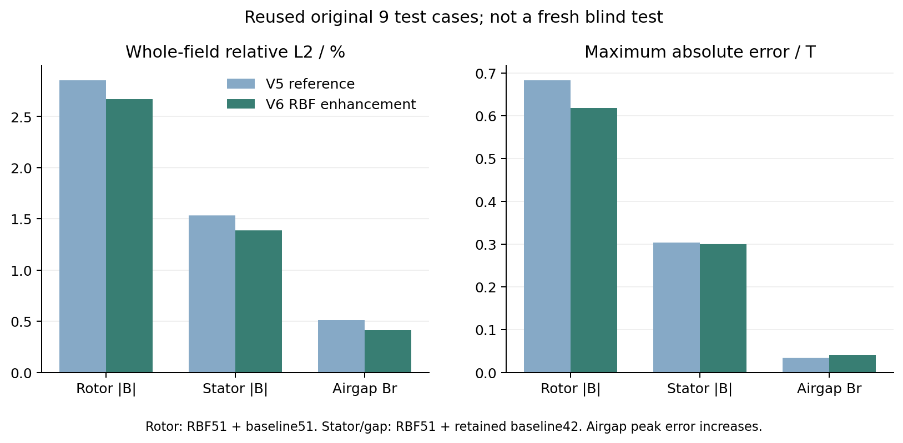
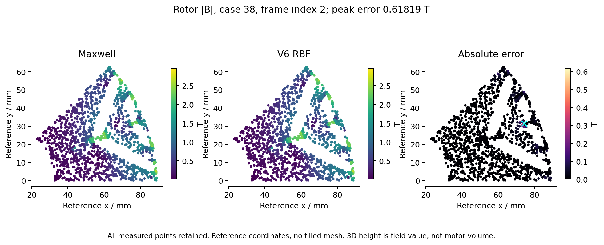
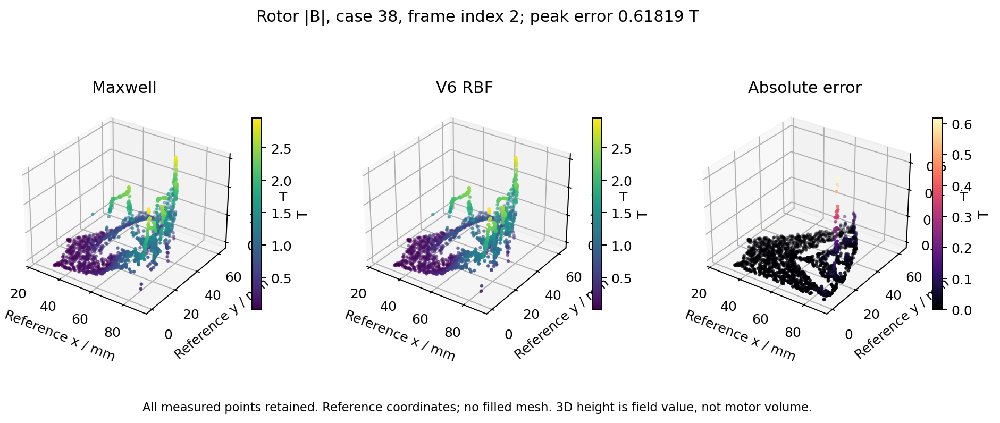
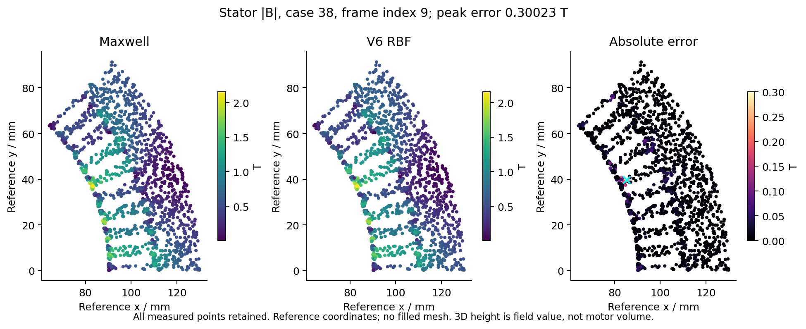
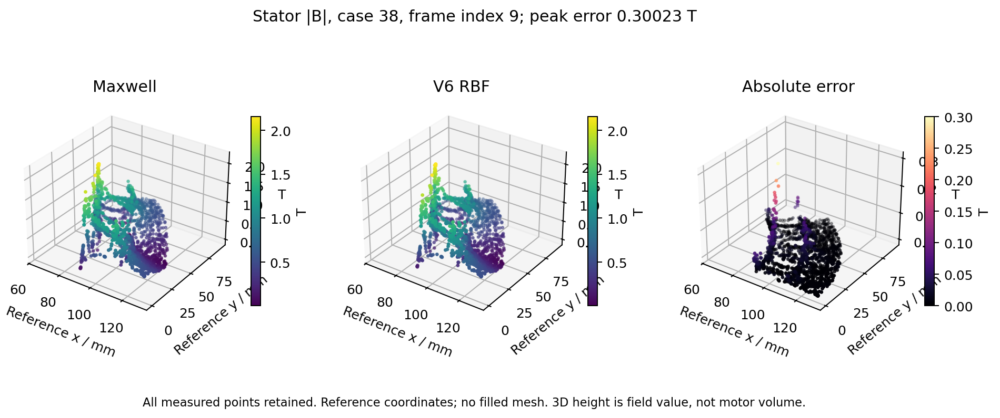
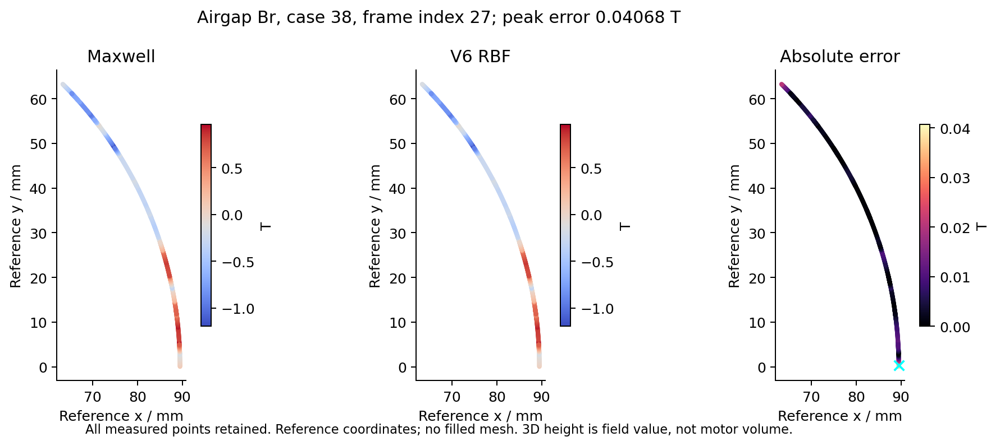
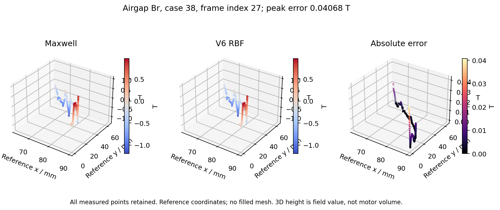
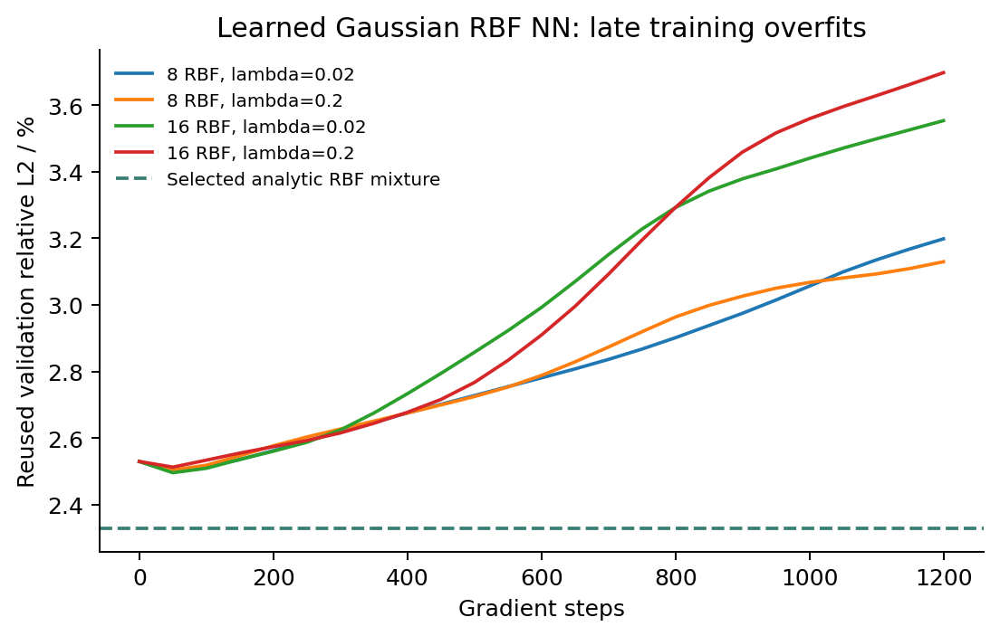

磁密代理模型 V6：RBF迭代
2026-10-15 · 420组核参数对照，4次真实高斯RBF神经网络训练。当前提升来自逐测点RBF回归与原模型组合。
原9工况复评
这些工况已经多轮查看，并非全新盲测。转子和定子仍未低于1%。气隙平均误差下降，但最大单点误差上升。
转子使用RBF51与既有51基线；定子和气隙为RBF51加原42基线，因此同时含有新增训练工况的影响。全60训练内拟合另见V5，不能代表预测精度。
下载原精度结果 JSON
转子：最大误差所在帧
保留所有测点，按参考坐标显示扇区，不补网格。3D高度为磁密值，不是电机体积。


定子：最大误差所在帧
保留所有测点，按参考坐标显示扇区，不补网格。3D高度为磁密值，不是电机体积。


气隙Br：最大误差所在帧
保留所有测点，按参考坐标显示扇区，不补网格。3D高度为磁密值，不是电机体积。


高斯RBF神经网络对照
8或16个高斯单元，逐点学习中心、宽度和输出权重。4次1200步训练，最佳验证检查点均为第50步；继续训练过拟合，未胜过选中的解析RBF方案。

V5交互云图与全60拟合版（上一轮指标） · SciPy RBF参数说明
磁密T，坐标mm；数据为二维Br/Bt或气隙Br。V6配方SHA256 82ba13fb85430fa56e386344f864cc9b2695b6ec8588dcd21c1b3d4d287138cd